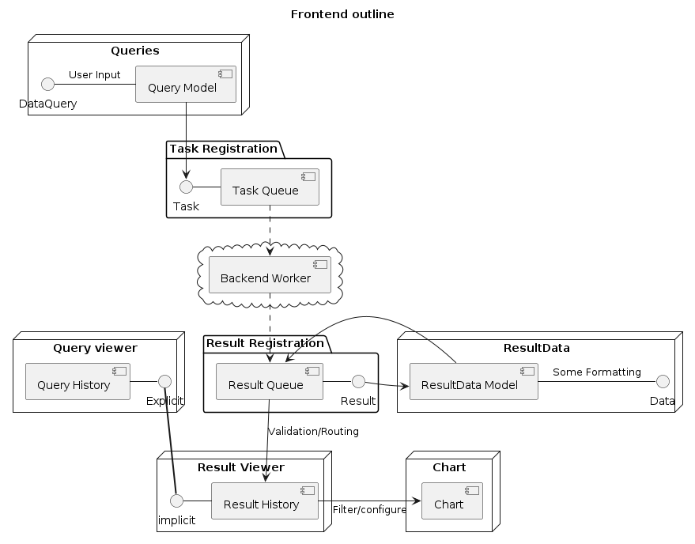

Questions
Table of Contents

1. for the `run.sh` script
Current daemon starting script In this script, I simply launch the backend/websocket server process as a background process of a shell with
./path/to/server-executable &
and then locally run the local http server through vite.js as another background process with
cd path/to/frontend_dir && npm run dev
1.1. Question: How to use this approach yet cleanly shutdown the websocket connection upon shutdown?
Problem is, the open connection seems to stay open after not the cleanest shutdowns and/or errors… This could be remedied by keeping track of which shell was used to launch the the network, but this could obviously be done in a more streamlined way…
1.1.1. [?] Containers / Docker solution or simply a barebone script taking care of exposing control over those subprocesses lifetime?
2. Stores with more dedicated purposes…
3. Split frontend into well-partitionned modules